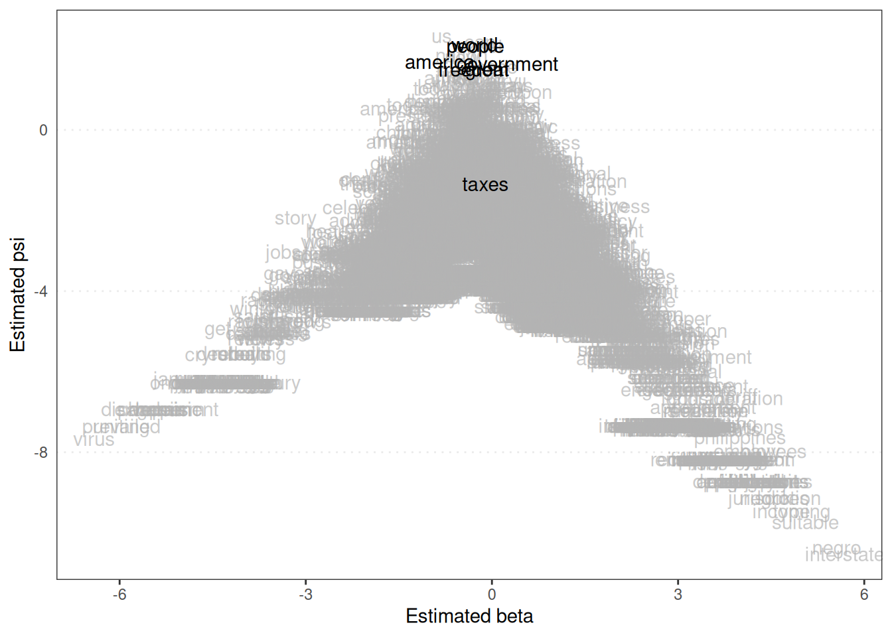
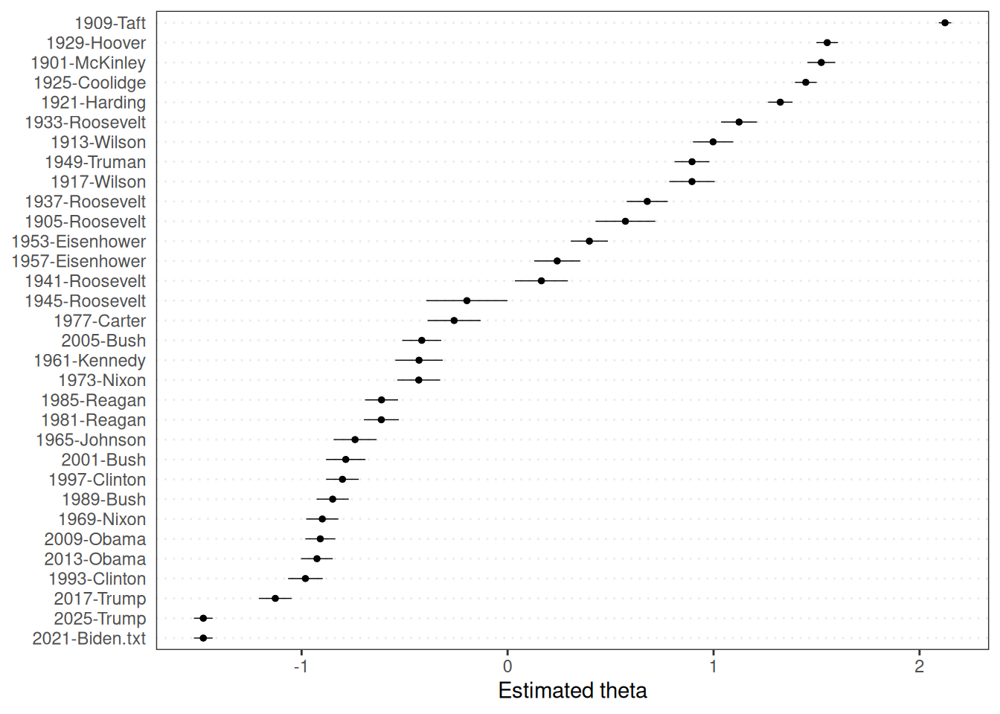

6.2 Wordfish
Unlike Wordscores, Wordfish is an unsupervised scaling method. It does not require pre-scored reference texts. Instead, it models word frequencies in documents based on a Poisson distribution while simultaneously estimating document positions and word-specific parameters. The model assumes that a word’s frequency in a document is related to the document’s position on a single latent dimension, the word’s overall tendency to occur in the document, and its specific association with the latent dimension.
The output of Wordfish includes * \(\theta\) (theta): The estimated position of each document on the latent dimension. * \(\alpha\) (alpha): The estimated intercept for each word, representing its overall frequency. * \(\beta\) (beta): The estimated weight for each word, representing its association with the latent dimension. Words with large positive beta values are more likely to appear in documents with high theta values, and vice versa for large negative beta values. * \(\psi\) (psi): A document-specific fixed effect that captures variations in document length.
Wordfish estimates a single latent dimension. The direction of this dimension is arbitrary (e.g. left to right or right to left). We can orient the dimension by specifying two anchor texts or by selecting a direction using the dir argument in textmodel_wordfish().
Let’s apply Wordfish to a corpus of US presidential inaugural speeches. We will use speeches after 1900 and preprocess the texts similarly to the Wordscores example. We could choose speeches from presidents typically considered at opposite ends of a relevant dimension (such as a left-right scale) to orient the scale. For example, we could use the 1965 Johnson and the 1985 Reagan speeches to define the direction, arbitrarily assigning one speech to one end of the scale and the other to the other.
library(quanteda)
data(data_corpus_inaugural)
set.seed(42)
corpus_inaugural <- corpus_subset(data_corpus_inaugural, Year > 1900)
# Tokenise and preprocess the corpus
data_inaugural_tokens <- tokens(
corpus_inaugural,
what = "word",
remove_punct = TRUE, # Remove punctuation
remove_symbols = TRUE, # Remove symbols
remove_numbers = TRUE, # Remove numbers
remove_url = TRUE, # Remove URLs
remove_separators = TRUE, # Remove separators
split_hyphens = FALSE, # Do not split hyphenated words
include_docvars = TRUE # Include document variables (metadata)
)
data_inaugural_tokens <- tokens_tolower(data_inaugural_tokens)
data_inaugural_tokens <- tokens_select(data_inaugural_tokens, stopwords("english"), selection = "remove")
data_inaugural_dfm <- dfm(data_inaugural_tokens)
# Print document names to identify indices for direction. We needed the order of documents to specify anchor texts by index
data_inaugural_dfm@Dimnames$docs## [1] "1901-McKinley" "1905-Roosevelt" "1909-Taft" "1913-Wilson"
## [5] "1917-Wilson" "1921-Harding" "1925-Coolidge" "1929-Hoover"
## [9] "1933-Roosevelt" "1937-Roosevelt" "1941-Roosevelt" "1945-Roosevelt"
## [13] "1949-Truman" "1953-Eisenhower" "1957-Eisenhower" "1961-Kennedy"
## [17] "1965-Johnson" "1969-Nixon" "1973-Nixon" "1977-Carter"
## [21] "1981-Reagan" "1985-Reagan" "1989-Bush" "1993-Clinton"
## [25] "1997-Clinton" "2001-Bush" "2005-Bush" "2009-Obama"
## [29] "2013-Obama" "2017-Trump" "2025-Trump" "2021-Biden.txt"# Identify the indices of the anchor documents (1965 Johnson and 1985 Reagan)
johnson_index <- which(docnames(data_inaugural_dfm) == "1965-Johnson")
reagan_index <- which(docnames(data_inaugural_dfm) == "1985-Reagan")
wordfish <- textmodel_wordfish(data_inaugural_dfm, dir = c(johnson_index, reagan_index))
summary(wordfish)##
## Call:
## textmodel_wordfish.dfm(x = data_inaugural_dfm, dir = c(johnson_index,
## reagan_index))
##
## Estimated Document Positions:
## theta se
## 1901-McKinley 1.5231 0.03445
## 1905-Roosevelt 0.5721 0.07408
## 1909-Taft 2.1237 0.01546
## 1913-Wilson 0.9976 0.04989
## 1917-Wilson 0.8953 0.05631
## 1921-Harding 1.3240 0.03016
## 1925-Coolidge 1.4477 0.02699
## 1929-Hoover 1.5517 0.02676
## 1933-Roosevelt 1.1239 0.04450
## 1937-Roosevelt 0.6780 0.05084
## 1941-Roosevelt 0.1642 0.06566
## 1945-Roosevelt -0.1975 0.10062
## 1949-Truman 0.8955 0.04309
## 1953-Eisenhower 0.3971 0.04596
## 1957-Eisenhower 0.2409 0.05696
## 1961-Kennedy -0.4300 0.05878
## 1965-Johnson -0.7405 0.05306
## 1969-Nixon -0.8995 0.03988
## 1973-Nixon -0.4312 0.05319
## 1977-Carter -0.2595 0.06574
## 1981-Reagan -0.6129 0.04347
## 1985-Reagan -0.6120 0.04098
## 1989-Bush -0.8492 0.03989
## 1993-Clinton -0.9815 0.04284
## 1997-Clinton -0.8017 0.04026
## 2001-Bush -0.7856 0.04875
## 2005-Bush -0.4165 0.04827
## 2009-Obama -0.9093 0.03711
## 2013-Obama -0.9255 0.03917
## 2017-Trump -1.1277 0.04045
## 2025-Trump -1.4772 0.02322
## 2021-Biden.txt -1.4772 0.02322
##
## Estimated Feature Scores:
## fellow-citizens assembled 4th march great anxiety regard
## beta 2.139 -0.0889 1.345 0.02153 -0.07759 0.6057 0.9199
## psi -4.906 -2.8417 -4.789 -1.77253 1.51900 -2.8294 -2.3046
## currency credit none exists now treasury receipts inadequate
## beta 2.167 0.9628 0.5128 -0.5351 -0.4631 1.528 2.346 0.2772
## psi -3.972 -2.2206 -2.2387 -2.4414 1.2856 -4.357 -5.658 -2.2953
## meet current obligations government sufficient public needs surplus
## beta -0.4061 1.534 0.4229 0.2488 0.6309 0.42348 -0.1739 1.345
## psi 0.1697 -3.672 -0.9451 1.6480 -1.4662 -0.04104 -0.8127 -4.789
## instead deficit felt constrained convene congress extraordinary
## beta -1.0077 -0.02742 0.4259 1.345 1.345 0.7940 0.7832
## psi -0.8927 -1.47020 -2.3942 -4.789 -4.789 -0.3057 -3.0024The summary() output for a Wordfish model provides information about the model fit and the estimated parameters (\(\theta\), \(\alpha\), \(\beta\), \(\psi\)). The \(\theta\) values are the estimated positions of the documents on the latent dimension. Like Wordscores, we can use the predict() function to obtain the estimated document positions with confidence intervals. The estimated position (theta) is called the fit in the output.
Using the textplot_scale1d() function, similar to Wordscores, we can visualise the estimated document positions and the word parameters. Plotting the word parameters (margin = "features") shows which words are associated with which end of the latent dimension.
library(quanteda.textplots)
textplot_scale1d(wordfish,
margin = "features", # Plot features (words)
highlighted = c("america", "great", "freedom", "government", "taxes", "people", "world")
)
A word’s position on this scale corresponds to its \(\beta\) value. Words at one end of the scale are more likely to appear in documents with high \(\theta\) values, and words at the other extreme are more likely to appear in documents with low \(\theta\) values. How we interpret the scale depends on the words we find at the extremes and any anchor texts used for orientation. Plotting document positions (margin = "documents" ) visualises the estimated values of \(\theta\).
# Plot the distribution of document positions (theta values) with confidence
# intervals. Theta values are the estimated document scores on the latent
# dimension.
textplot_scale1d(wordfish, margin = "documents" # Plot documents
)
This graph shows the estimated position of each inaugural address on the latent dimension, ordered by year. The confidence intervals indicate the uncertainty of these estimates. Interpreting this dimension requires careful consideration of the anchor texts used and the words that load highly on the dimension (from the word plot). For example, suppose we anchor with a president who is typically considered ‘liberal’ at one end and ‘conservative’ at the other, and the word plot shows terms related to social programmes at one end and terms related to individual freedom at the other. In that case, we might interpret this as a left-right political dimension. However, Wordfish can uncover any dominant latent dimension in the text, which may not always conform to preconceived notions such as a simple left-right scale.
Wordfish is a valuable tool for discovering latent dimensions in text data without relying on external scores. Its unsupervised nature can be both a strength (no need for reference data) and a weakness (latent dimension interpretation is not always straightforward and requires careful analysis of word loadings).